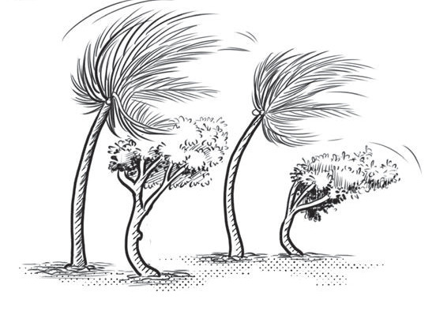

Picha zenye mielekeo tofautitofauti
Katika uchoraji, mistari hutoa mwongozo wa namna ya kuchora picha kwa kuonesha mielekeo tofautitofauti. Kila aina ya mwelekeo hutegemea matumizi ya aina fulani ya mistari. Kielelezo namba 16 ni kisiki, ambapo gogo limekatwa. Chunguza uelekeo wa mistari iliyopo kwenye picha hiyo, utagundua kuwa mistari iliyopo kwenye kielelezo hiki inaonesha mielekeo tofauti.
Kielelezo namba 16: Mfano wa picha yenye mielekeo tofautitofauti
Picha zenye uelekeo wa upepo
Katika uchoraji, mistari huweza kutumika kuchora picha zinazoonesha uelekeo wa upepo. Chunguza uelekeo wa mistari katika miti kwenye Kielelezo namba 17, utagundua kuwa inaonesha uelekeo wa upepo.

Kielelezo namba 17: Mfano wa picha yenye kuonesha uelekeo wa upepo

Chora picha ya kitu chochote kilichopo kwenye mazingira ya shuleni au nyumbani kwa kuzingatia matumizi ya mistari.